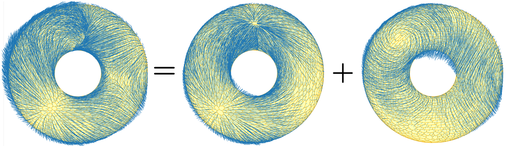

The workshop aims to bring together researchers working on different aspects of the discrete exterior calculus (DEC), from discretization of curved domains, through discretization of differential operators and variables, to applications of DEC in electromagnetism, acoustics, fluid flow, and other areas.
Moreover, the workshop strives to be a platform for popularization of DEC among students and experts from different yet related areas, such as differential geometry, algebraic topology, and partial differential equations.
The purpose of the workshop is to facilitate new collaborative efforts and discussion of many aspects of DEC between researchers and also students.
If you are interested in presenting your research related to the topic, please contact the organizer Lenka Ptackova (lenka at kam.mff.cuni.cz).

| March 25, room K3 9:00 - 10:00 |
Modelling Generalized Continua with Homological Algebra
Speaker: Kaibo Hu (University of Oxford) |
| March 26, room K1 14:00 - 15:00 |
Finite element form-valued forms
Speaker: Kaibo Hu (University of Oxford) |
| April 28, room K433KNM | |
| 12:30 - 13:00 | Coffee/Check-in |
| 13:00 - 14:00 |
Disrete Exterior Calculus on General Polygonal Meshes Over Non-flat Surfaces Speaker: Lenka Ptackova (Charles University) |
| 14:00 - 15:00 | TBA |
| 15:00 - 15:30 | Coffee break |
| 15:30 - 16:00 | TBA |
| April 29, room K433KNM | TBA |
| April 30, room K1 14:00 - 14:45 |
TBA
Speaker: Tytti Saksa (University of Jyväskylä) |